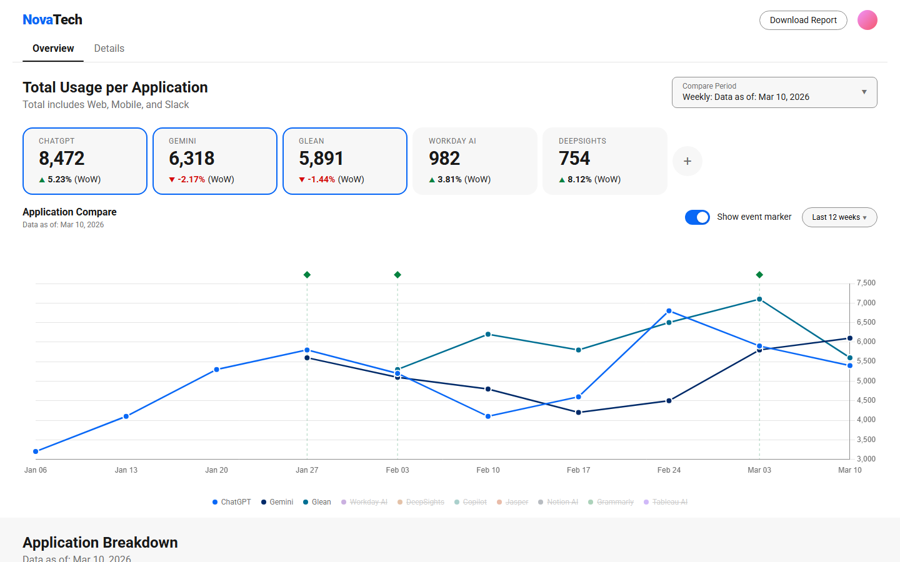

Gary Gisclair
AI-Augmented Product Designer
UX/UI, Data Visualization & Design Systems
Product designer with 14+ years creating data-driven enterprise applications, analytics dashboards, and scalable UI systems. I transform complex data into clear visual interfaces grounded in proven visualization design principles. The reporting platform I designed earned the highest NPS and CSAT scores among its users.

Selected Work
Portfolio


Career
Experience
Mar 2012 – Feb 2026 · 14 yrs
Manager, UI & UX Design
eBay
Led UX and product design for enterprise analytics platforms serving executives, data scientists, and cross-functional teams.
- Built QuickStrike, a flagship reporting platform used by finance analysts through the CFO, eventually expanding across 6+ teams over 14 years
- Designed analytics dashboards and multi-step intake workflows for Finance, Tax, IT, HR, Marketing, and eBay for Charity
- Created A/B prototypes in Figma and ran survey-driven validation with product managers
- Designed a standardized UI pattern library supporting eBay's internal AI applications
- Produced print-ready brand assets for internal teams including logos, apparel, electronics branding, stickers, and posters
- Highest NPS & CSAT scores among data scientists and analysts using the platform
- Standardized UI patterns across 6+ teams, reducing design-to-dev handoff inconsistency
- Platform grew from single-team finance tool to company-wide reporting standard
Oct 2011 – Mar 2012 · 6 mos
Art Director
Highwood Design
Directed web and brand design for a UK-based development firm, collaborating across distributed teams.
- Developed reusable CMS components and UI structures for scalable client websites
- Designed intake forms that streamlined client data collection workflows
- Created print-ready brand identities and promotional materials for multiple clients
Sep 2010 – Nov 2011 · 1 yr 3 mos
Creative Consultant
Joomlashack
Designed CMS website templates adopted across Joomlashack's client base, focused on usability and flexibility.
- Built scalable templates with clear navigation structures and content hierarchies
- Created brand identities and visual systems for client projects
EDUCATION
Bachelor of Arts (B.A.), Graphic Design
University of Louisiana at Lafayette